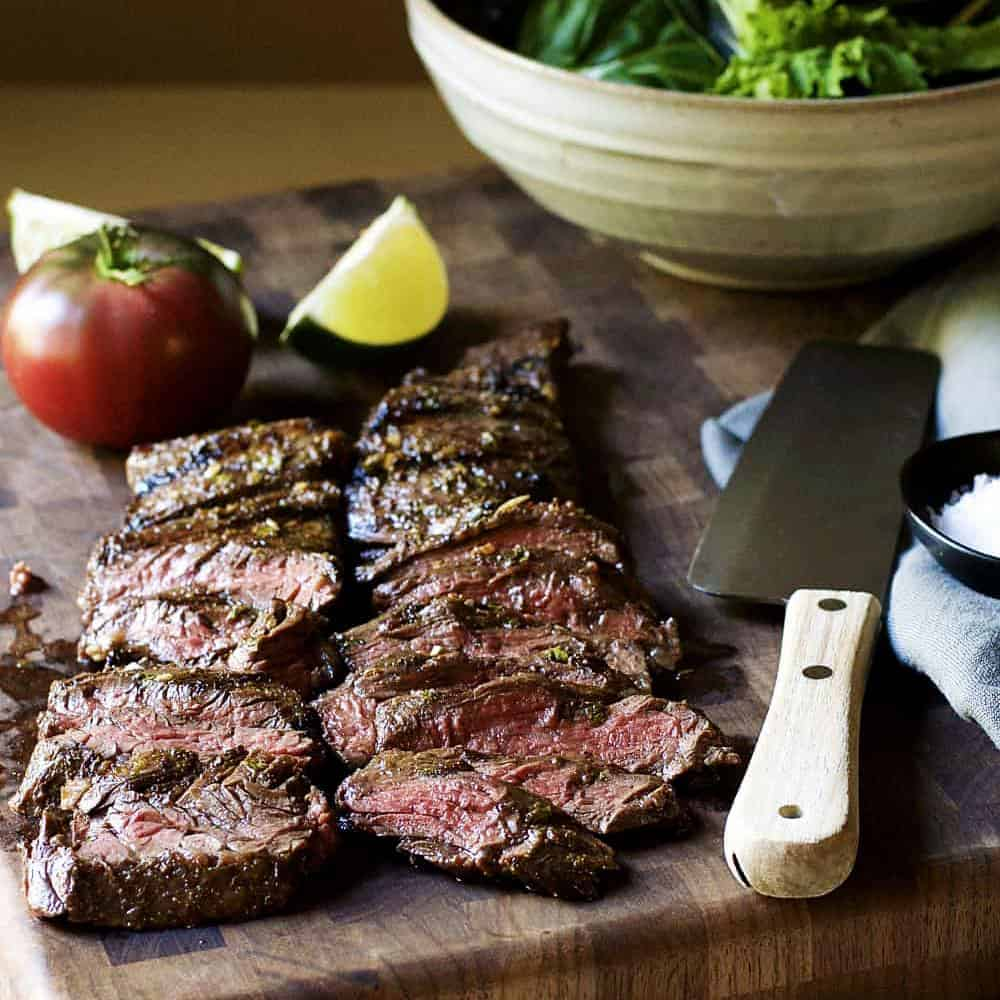

Carne Asada

Ingredients
- 2 pounds of skirt steak trimmed of excess fat
Marinade Igredients
- 1 jalapeno
- 4 cloves garlic minced
- 1/2 cup of fresh cilantro leaves chopped
- juice of 1 orange, lime, and lemon
- 2 tablespoons of apple cider vinegar
- 1 teaspoons kosher salt
- 1/3 cup of olive oil
- 1 teaspoon of cumin
- 1/4 teaspoon of ground pepper
Steps
- In a large glass baking sheet, mix in all marinade ingredients. Put skirt steak in and flip once to coat with marinade. Leave covered in fridge from 1 hour to 8. Any longer will break down the meat.
- preheat grill to medium heat and grill 7 to 10 minutes a side. Pull off and rest the meat for 5 minutes.
- Slice thinly across the grain and serve.
Original Recipe